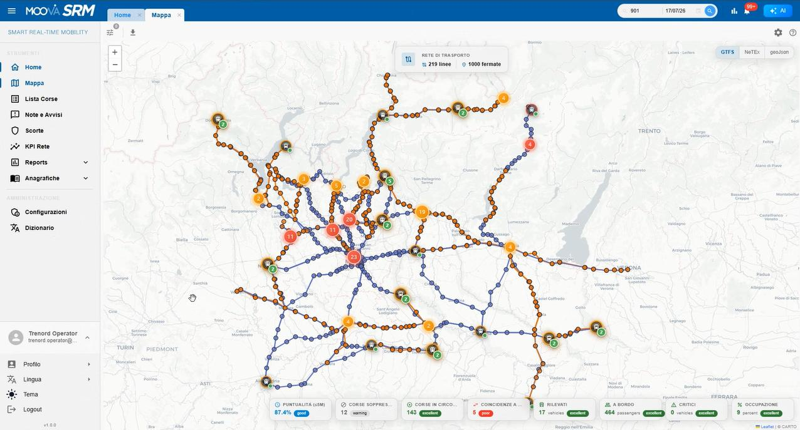

MOOVA SRM · Smart Real-Time Mobility
La sala operativa per il trasporto multimodale, in tempo reale.
Una control room leggera e rapida da installare per il monitoraggio multimodale e multirete. Costruita sugli standard Transmodel, NeTEx e SIRI, pensata per gli operatori di esercizio.

Perché SRM
Monitorare, decidere, agire — da un'unica console
SRM è una piattaforma che raccoglie e coordina tutte le informazioni operative — posizione delle corse, stato del servizio, avvisi e risorse di esercizio — consentendo agli operatori di monitorare e gestire il servizio in tempo reale. La piattaforma supporta inoltre attività di analisi attraverso dashboard e KPI, consentendo di valutare le performance operative e orientare le decisioni sulla base dei dati.
Strumenti di monitoraggio
Tutti i classici strumenti del monitoraggio — mappe, liste, viste linearizzate, schede di dettaglio, storico dei percorsi — per corse vestite e non.
Gestione operativa
Avvisi, allarmi e motivi di ritardo, scorte e spole, vestizione dei mezzi e del personale: la gestione operativa in un unico posto.
AI a supporto
Strumenti di intelligenza artificiale integrati a supporto del monitoraggio e della gestione operativa.
Configurabile
Home a widget personalizzabile, cataloghi, tipi di nota/avviso, ruoli e soglie gestiti a runtime. Dizionario multilingua integrato.
Leggera sull'hardware
Sviluppata per richiedere poche risorse hardware: può girare anche su cluster di piccole dimensioni.
Multimodale nativa
Focus spiccato sul monitoraggio multimodale, con algoritmi per il calcolo di coincidenze e corrispondenze e strumenti dedicati agli interscambi.
Ottimizzata per mobile
Interfaccia pienamente responsiva: la sala operativa e gli strumenti di monitoraggio funzionano perfettamente anche da smartphone e tablet.
App terra-bordo
Applicazione dedicata alla comunicazione terra-bordo, con interfacce già progettate — alcune già implementate — per il personale a bordo.
Ticketing e triage
Gli operatori aprono segnalazioni direttamente dallo strumento: ogni evento diventa un ticket tracciato. Un sistema di triage smista automaticamente le segnalazioni verso il canale di risoluzione corretto, accelerando la presa in carico.
I fondamenti
Costruita sugli standard e lavorando a stretto contatto con i clienti
Questi sono i fondamenti effettivi della piattaforma: non solo l'aderenza ai modelli dati del trasporto pubblico — che rende SRM interoperabile e a prova di futuro, evitando il lock-in — ma anche anni di esperienza sul campo con i clienti del settore, tradotta in funzionalità concrete e implementate.
Architettura
Architettura — scelte e valore per il business
SRM è un'applicazione a microservizi che unifica processi eterogenei — pianificazione, mappa real-time, equipaggi, controlli medici, reportistica, KPI, anagrafiche — in un unico frontend modulare.
Frontend modulare
Un modulo per processo, isolati tra loro: deploy indipendenti, blast radius contenuto, meno regressioni per rilascio.
React + TypeScript
Type-safety in fase di compilazione, tooling standard di settore, competenze reperibili sul mercato.
Design system + store centralizzato
Libreria di componenti condivisa e single source of truth dei dati: UX coerente, riuso, nessun disallineamento tra viste.
Backend disaccoppiato
Ogni servizio (veicoli, equipaggi, pianificazione, KPI, rete, AI) esposto tramite un contratto dedicato: le evoluzioni restano confinate all'interfaccia.
Multilingua + real-time + AI nativi
Multilingua, streaming di dati live e assistente AI integrati alla base, non aggiunti a posteriori.
CI con test automatici
Verifica continua ad ogni modifica: evoluzione del prodotto a basso rischio.
Responsive by design
Layout adattivo su tutte le viste: la stessa applicazione gira senza compromessi da desktop a mobile, senza codice duplicato.
Il prodotto
Uno sguardo dentro SRM
Schermate e video dalla piattaforma in esercizio nel contesto dell'integrazione Trenord. Scegli una voce dall'elenco, clicca un'immagine per ingrandirla.
Dove stiamo andando
La roadmap del percorso
Le fasi del progetto in colonna, collegate dalla dorsale. Clicca una fase per aprire o chiudere le sue attività; passa sopra una fermata per il dettaglio completo. Per modificarla usa la Roadmap (admin) dal menù.